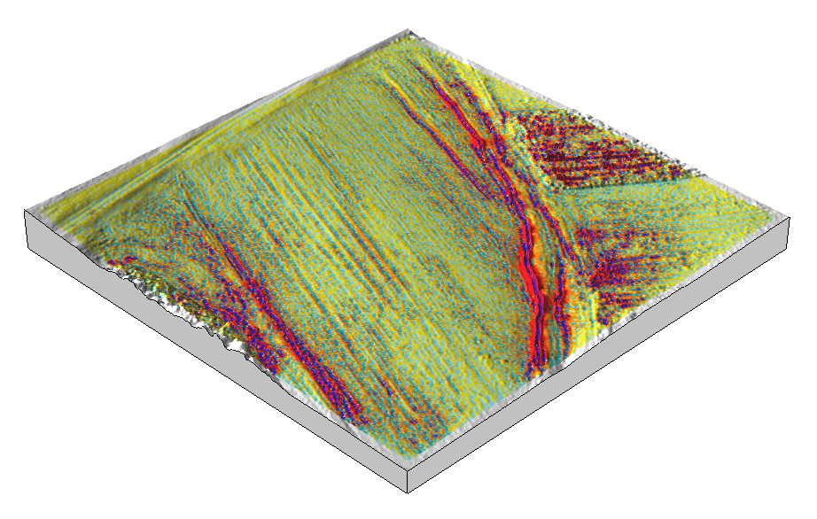
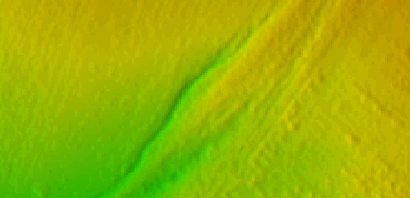
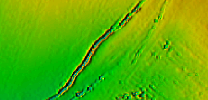
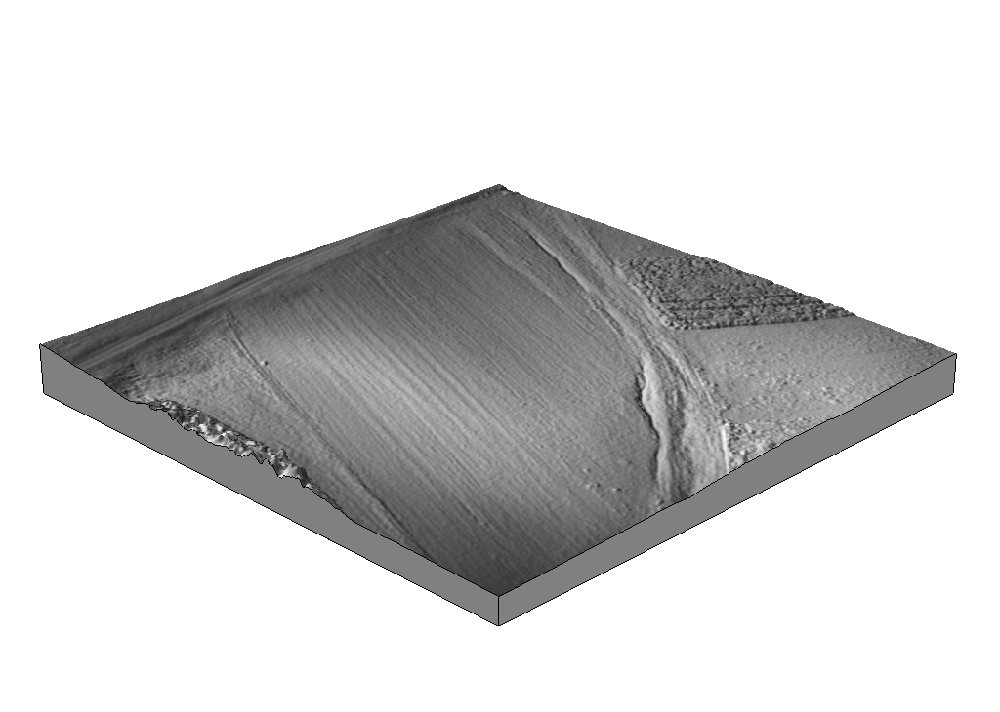
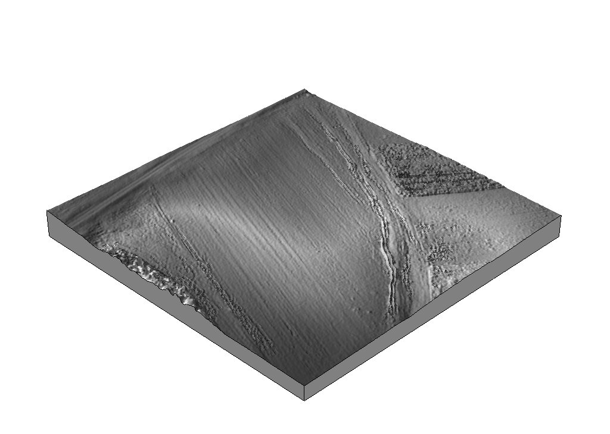
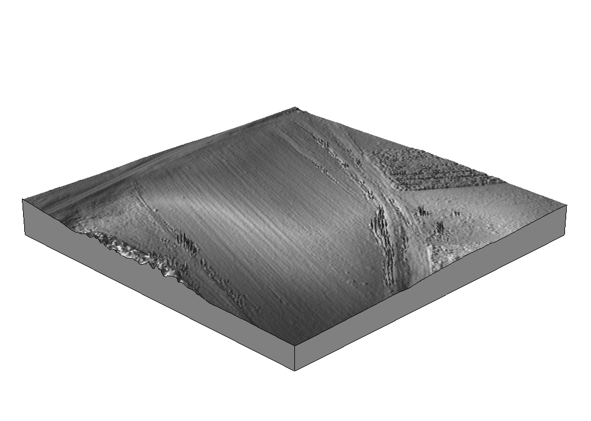
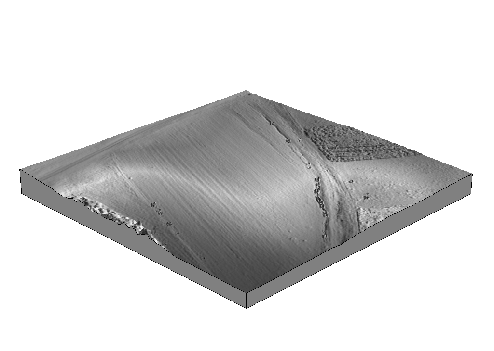

Detachment limited gully evolution
Sediment flux pattern

a) Digital surface model.
b Steady state evolution based on flux with 50 mm/hr rainfall intensity for 10 minutes.
a) >Steady state evolution based on flux with 155 mm/hr rainfall intensity for 10 minutes.
b Steady state sediment flux with 155 mm/hr rainfall intensity for 10 minutes.
Comparison of steady state and dynamic evolution with a detachment limited erosion regime
a) Digital surface model.
b Steady state evolution based on flux with 50 mm/hr rainfall intensity for 10 minutes.
a) Dynamic evolution based on flux with temporally variable rainfall intensity averaging 8 mm/hr over 6 hours.
b Dynamic evolution based on erosion-depositionwith temporally variable rainfall intensity averaging 8 mm/hr over 6 hours.
Erosion-deposition pattern
Steady state erosion-deposition with 155 mm/hr rainfall intensity for 10 minutes.
With r.sim.sediment sediment tends to be deposited on the banks of a channel, eroded in the channel, and deposited along the center of the channel. In the current implementation of this model this pattern of erosion and deposition causes ridges to develop along the banks of emerging gullies. This pattern also causes islands to form in gullies particular at bends.
 ...
With the current default paramters the ridges and islands formed by deposition continue to accumulate sediment and grow. Tuning the parameters may improve the behavior of the model by limiting the growth and development of these features. Further changes, however, may be necessary. Ideas for improving the model include:
- Parameter tuning
- Slope instability and avalanching
- Give deposited sediment higher erodibility
Comparison of steady state and dynamic evolution
Digital surface model interpolated from UAV photogrammetry.
Steady state landscape evolution with 155 mm/hr rainfall intensity for 10 minutes.
Dynamic landscape evolution with temporally variable rainfall intensity averaging 50 mm/hr over 3 hours.
Dynamic landscape evolution with temporally variable rainfall intensity averaging 8 mm/hr over 6 hours.
Dynamic evolution with a detachment limited erosion regime
Digital elevation model fused from lidar and UAV photogrammetry.
Dynamic landscape evolution with 155 mm/hr rainfall intensity for 1 hour.
Dynamic landscape evolution with 155 mm/hr rainfall intensity for 2 hours.
Dynamic landscape evolution with 155 mm/hr rainfall intensity for 6 hours.
Dynamic sediment flux with 155 mm/hr rainfall intensity for 6 hours.
Digital elevation model fused from lidar and UAV photogrammetry.
Dynamic landscape evolution with 155 mm/hr rainfall intensity for 1 hour.
Dynamic landscape evolution with 155 mm/hr rainfall intensity for 2 hours.
Dynamic landscape evolution with 155 mm/hr rainfall intensity for 6 hours.